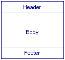
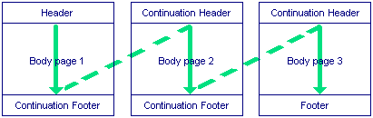

Because each
Configurable documents consist of a header, a body and a footer:

These are called forms. The body form of a document typically consists of a single line which is repeated; for example, a line showing the details of each invoice on a statement.
If the body runs to more than one page, the document needs continuation header and footer forms:

Note that continuation headers appear on all pages except the first, and continuation footers appear on all pages except the last; the header only appears on the first page, and the footer only appears on the last page. Continuation headers and footers can be different heights from headers and footers
For example, an invoice header might show the details of the